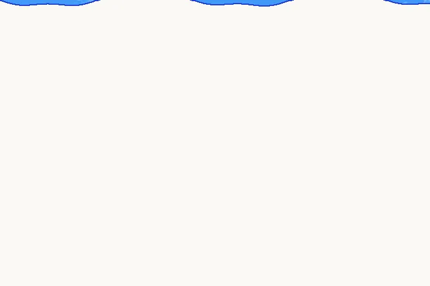

hi, I’m Chawk. I turn doodles into algebra.
Every squiggle is a function.
Drop in a doodle. I’ll find the line, circle, wave or curve hiding behind every stroke, then redraw your picture using nothing but equations.
no doodle handy? borrow one →
Best on dark lines and plain paper. Photos of your cat are adorable but out of scope. PNG, JPG or WebP, up to 15 MB.

Fig. 1 · the river, rebuilt from 4,017 equations
x(t) = 140.86 − 0.37cos 2πt + 2.77sin 2πt(1)
y(t) = 600.3 − 1.69cos 2πt − 0.4sin 2πt − 0.01sin 4πt(2)
x(t) = 268.19 − 4.41cos 2πt − 1.86sin 2πt(3)
y(t) = 10.55 − 1.58cos 2πt + 2.37sin 2πt − 0.01sin 4πt(4)
↑ the whole river is just algebra.